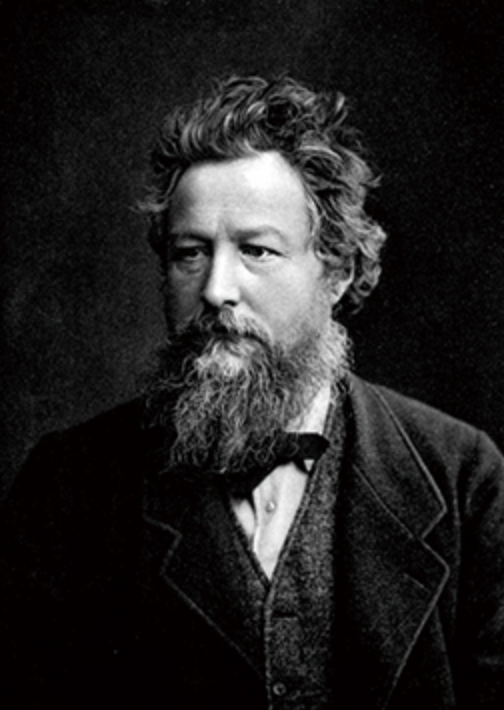
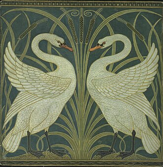
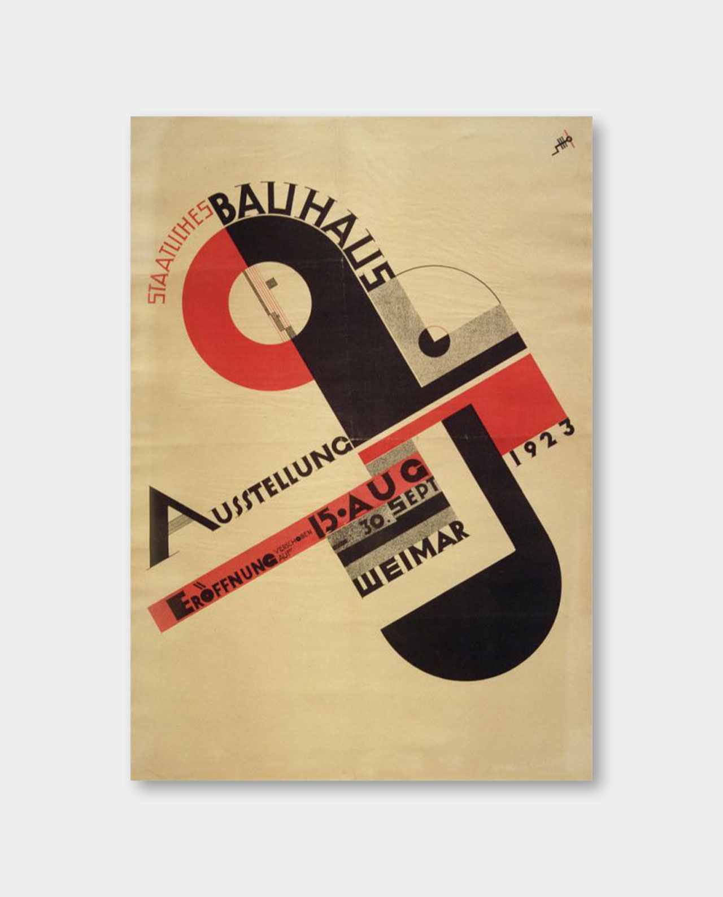
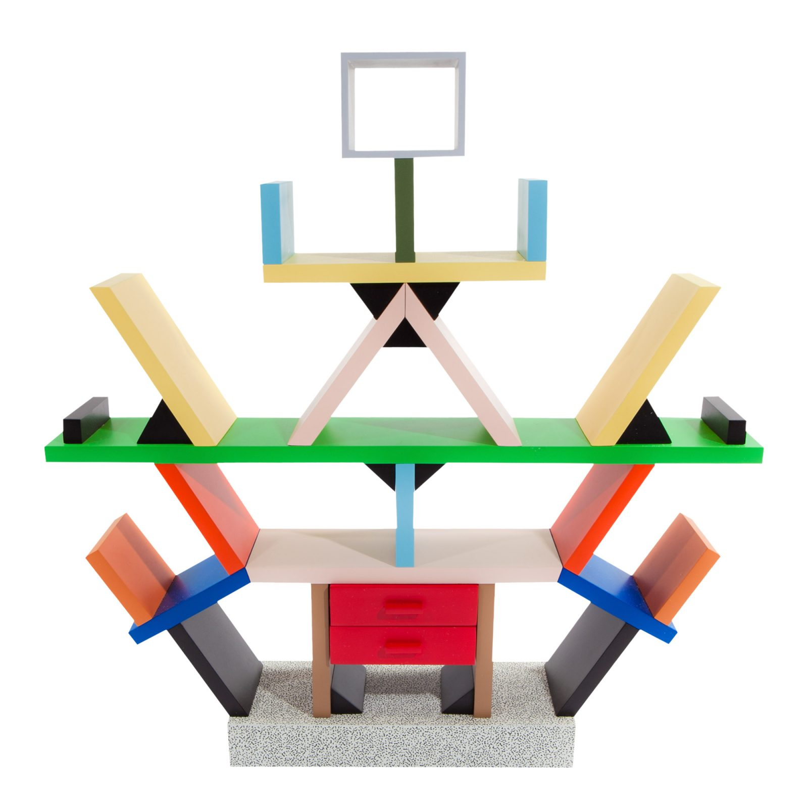
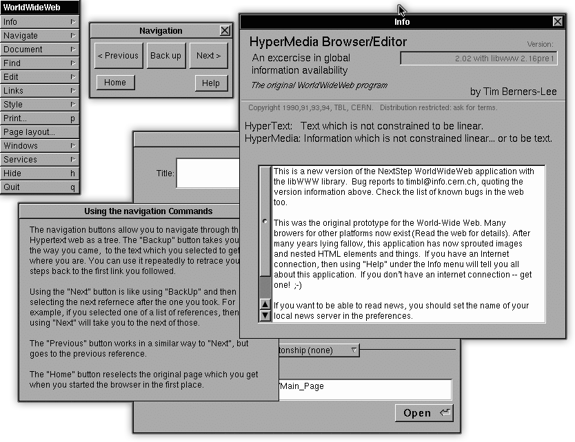

|
1760 - 1840s |
디자인이 순수 미술에서 분리되어 '산업'과 결합하기 시작한 시기. 18세기 중후반 시작된 산업혁명으로 공장제 대량생산 시대가 열렸습니다. 제품의 생산 속도는 빨라졌지만, 수공예 시대의 섬세함과 미적 가치를 잃고 품질이 조악해지는 문제가 발생했습니다. |
|---|---|---|
 |
Arts and Crafts Movement |
기계 만능주의에 대한 반발로 일어난 최초의 근대 디자인 개혁 운동. 기계 생산품을 비판하며 중세 장인의 수공예 가치 부활을 주장했고, '생활 속의 예술'을 강조하며 디자인의 사회적 역할을 제시했습니다. |
 |
Art Nouveau |
'새로운 예술'을 의미하며, 과거 양식에서 벗어나 시대정신을 담은 새로운 스타일을 창조.식물의 덩굴, 꽃, 곤충 등 자연의 유기적인 형태에서 영감을 얻은 유려하고 화려한 곡선이 특징이며, 예술과 디자인, 생활의 통합을 시도했습니다. |
 |
Modernism, Bauhaus |
20세기 디자인을 정의한 가장 중요하고 영향력 있는 사조. 제1차 세계대전 이후, 과거의 장식주의를 비합리적이라 비판하며 원, 사각형 등 단순한 기하학적 형태, 대량생산을 위한 표준화된 디자인을 추구했습니다. |
 |
postmodernism |
기능만을 강조하며 획일화된 모더니즘의 엄격함에 대한 반발로 등장. 역사적 양식을 유머러스하게 인용하거나, 기능과 무관한 화려한 색상과 장식을 적극적으로 사용하며 다양성을 추구했습니다. |
 |
c. 1990s - Present |
개인용 컴퓨터(PC)와 인터넷의 등장은 디자인의 장을 스크린으로 옮겨왔습니다. 월드 와이드 웹(WWW)의 보급으로 웹 디자인 분야가 탄생했고, 스마트폰의 등장으로 디자인의 핵심이 UX/UI로 이동했습니다. 현재는 AI를 디자인 과정에 활용하는 새로운 시도가 이어지고 있습니다. |